General Logic
General Logic is a common technique in most Sudoku solving algorithms.
General Logic is a generalization of BaseSet/CoverSet,
so first understand the Fish algorithm.
The first step in Fish extension is (Finned)Franken/Mutant Fish.
This section is based on
A General Logic for Sudoku(www.sudokuone.com/sweb/general.htm).
Weak Link
The basis of generalLogic is Weak Link.
Fish is a solving algorithm that is composed of Weak Link of rows and columns.
Sudoku has block constraints in addition to rows and columns,
and Franken/Mutant Fish is a solving algorithm that is composed of rows, columns, and blocks.
Furthermore, because of the nature of Sudoku that each 9x9 cell can contain a number from 1 to 9, each cell is also Weak Link.
In total, Sudoku has 324 constraints.
general Logic is a solving algorithm that is composed of Weak Link of rows, columns, blocks, and cells.
(Note that Strong Link is included in the Weak Link.)

BaseSetとCoverSet、Rank
- BaseSet: Select n weak links so that they do not overlap. This set of n weak links is called BaseSet (n-BaseSet). Each weak link has one true value, and there are n true values in the entire BaseSet.
- CoverSet: Select m weak links (m≧n) different from BaseSet, so that they completely cover BaseSet. This is called CoverSet (m-CoverSet). A CoverSet can contain elements that do not belong to the BaseSet. (In fact, elements that do not belong to BaseSet are necessary for General Logic to hold) There may be overlaps between CoverSets. The number of true values in the entire CoverSet is m or less.
- Rank: The rank of a pair of BaseSet and CoverSet (written as BaseSet/CoverSet) is defined as follows.
Rank of BaseSet/CoverSet=m-n
General Logic
(0) Rank 0
When n-CoverSet completely covers n-BaseSet,
the cells and numbers in CoverSet-BaseSet (difference set) are not true.
(When the difference set is empty, the logic here does not hold.)
If they were true, the weak links of CoverSet that contain them would have no truth in their intersection with BaseSet.
Therefore, BaseSet contains n-1 truths.
In other words, BaseSet does not have enough truths. Therefore, the first assumption is incorrect.
The following diagram shows the simplest Fish's BaseSet (columns) and CoverSet (rows).
Please check BaseSet and CoverSet, BaseSet-CoverSet (difference), and BaseSet∩CoverSet (common).
Note that BaseSet-CoverSet is not limited to one element. Even if there are multiple elements, all of them can be excluded.

(1) Rank 1
Consider the case where n-BaseSet is covered by (n+1)-CoverSet.
There is a degree of freedom in how to choose the CoverSet that covers n-BaseSet.
To make it an analysis algorithm, the following conditions must be met.
- Condition 1: (n+1)-CoverSet completely covers n-BaseSet.
- Condition 2: Two of the (n+1) weak links in (n+1)-CoverSet have a common part, and there is an element (a cell or number in the common part) that is not included in n-BaseSet.
In the following diagram, assume that "element X in the common part is true."
Since element X is not included in Baseset and is included in two weak links of CoverSet, the number of weak links in CoverSet that contain truths in BaseSet is (n-1). Since there are not enough truths in BaseSet, the first assumption is incorrect.


The following is an example where the BaseSet has cell rank 1.

(2) Rank k (k≥1)
Consider the case where n-BaseSet is covered by (n+k)-CoverSet. The concept is the same as for Rank 1.
To make it an analysis algorithm, the following conditions must be met.
- >Condition 1: (n+k)-CoverSet completely covers n-BaseSet.
- Condition 2: (k+1) of the weak links that make up (n+k)-CoverSet have a common part, and there is an element (a cell or number in the common part) that is not included in n-BaseSet.
Assume that "element X" in the common part is true.
Since prime X is not included in the BaseSet and is included in the (k+1) weak links of the CoverSet, the number of weak links in the CoverSet that contain the truth of the BaseSet is (n-1). Since there are not enough truths in the BaseSet, the first assumption is incorrect.

General Logic program code
The General Logic program code can be found in the GNPX proj Sudoku Analysis App Source Project.
Please download it.
The algorithm is relatively simple, as it is an extension of Fish to rows, columns, blocks, and cells.
However, please note the following points.
- General Logic is a logic that excludes cells and numbers at the position where Locked is broken as "not true". It does not confirm cells and numbers that are the only candidates. In addition to General Logic, a confirmation code (Single) is required.
- The minimum program to solve Sudoku with General Logic can be composed of [single + General Logic].
Example of a General Logic solution
Here is an example of a General Logic solution.
The top row shows the same cells and numbers to be excluded as "LockedTriple[3D] r459c2 #168 r37c2#1 is not True",
but there is no solution that corresponds to the conventional method.
The bottom row shows how the same cells and numbers can be excluded using ALS-XZ (SinglyLinked) (bottom right). However, the method used is completely different.
General Logic Solution Example
Here is an example of a GeneralLogic solution. In the top row,
the cells and numbers to be excluded are the same as "LockedTriple[3D] r459c2 #168 r37c2#1 is not True",
but there is no solution that corresponds to the conventional method.
In the bottom row, the same cells and numbers can be excluded using ALS-XZ (SinglyLinked) (bottom right).
However, the method used is completely different.
3..5....2.5.2...1.....36.....59.7.31..9...4..23.8.46.....79.....7...8.4.8....2..9
5..7....3.3.4...6.....36.....45.1.29..9...4..68.9.27.....27.....1...3.5.7....5..4
As shown in the table below (Examples of the Application of General Logic),
solutions from conventional methods can be reinterpreted using General Logic.
The following example is a fourth-order General Logic (rank 0).
As shown here, conventional methods may not be compatible with the General Logic solution.
This shows that General Logic is a more general solution method.
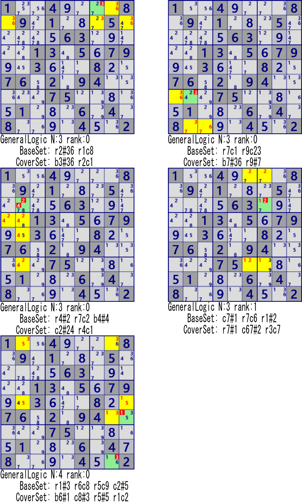
1..4....8.9.1...5.....63.....13.5.79..3...8..76.2.94.....75.....1...6.4.8....4..2
Another challenge is to find new solutions (dedicated methods similar to conventional methods) from the General Logic solution.
Examples of applying General Logic
Here is an example of applying General Logic to a situation where the normal Sudoku algorithm can be used to solve the problem.
Since Single is a confirmation of a cell/number with only one candidate, General Logic is not required,
but it is shown as a minimal application example of BaseSet/CoverSet.
| Algorithm | Example | BaseSet | CoverSet | Commentary |
|---|---|---|---|---|
| Single/ LastDigit |
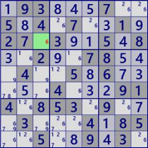 |
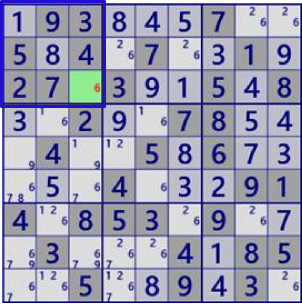
BaseSet:b1#6 |
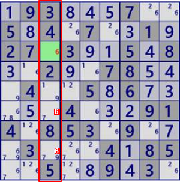
Coverset:c3#6 |
rank0 r68c3#6 is not true |
| Single/ Naked |
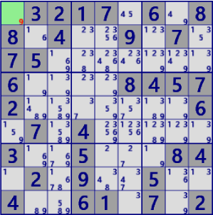 |
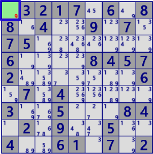
BaseSet:r1c1 |
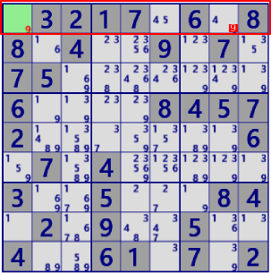
Coverset:r1 |
rank0 r1c8#9 is not true |
| Single/ Naked |
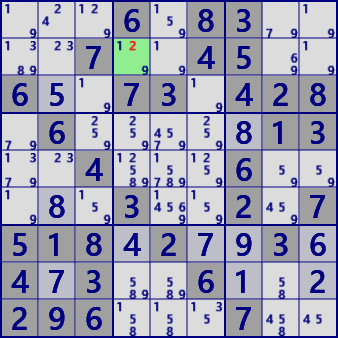 |
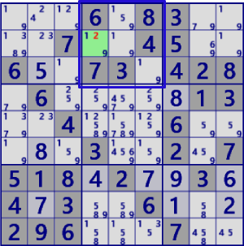
BaseSet:b2#2 |
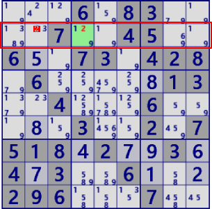
Coverset:r2#2 |
rank0 r2c2#2 is not true |
| LockedCandidate/ (type1) |
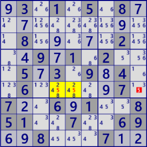 |
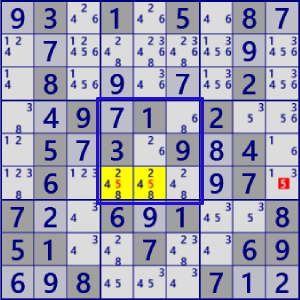
BaseSet:b5#5 |
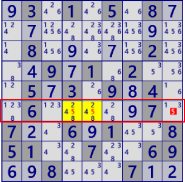
Coverset:r5#5 |
rank0 r5c9#5 is not true |
| LockedCandidate/ (type2) |
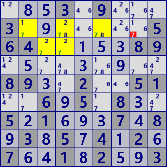 |
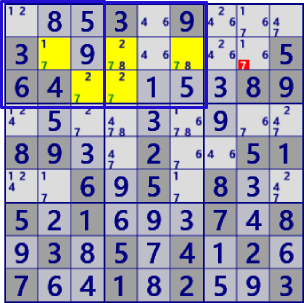
BaseSet:b12#7 |
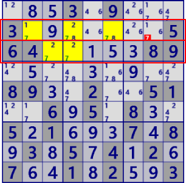
Coverset:r23#7 |
rank0 r2c8#7 is not true |
| LockedSet/Naked | 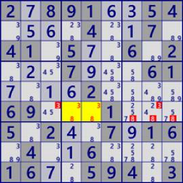 |
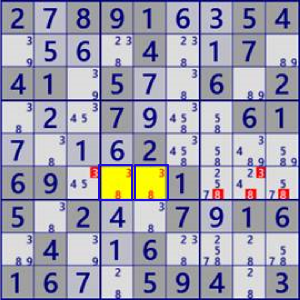
BaseSet:r6c45 |
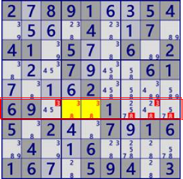
Coverset:r6#38 |
rank0 r4c38#3 r4c789#8 is not true |
| LockedSet/Hidden | 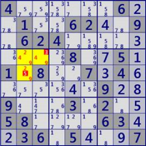 |
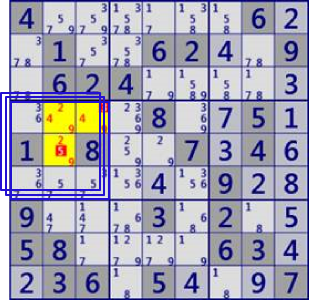
BaseSet:b4#249 |
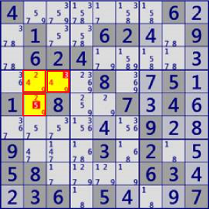
Coverset: r4c23 r5c2 |
rank0 r4c3#3 r5c2#5 is not true |
| Fish | 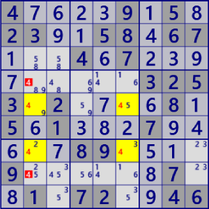 |
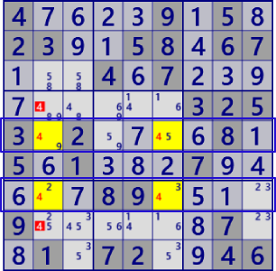
BaseSet:r57#4 |
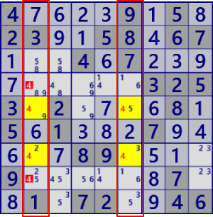
Coverset:c25#4 |
rank0 r48c2#6 is not true |
| FinnedFish | 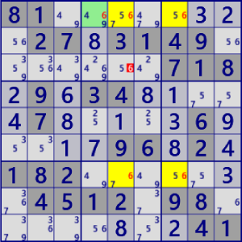 |
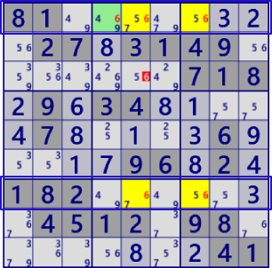
BaseSet:r17#4 |
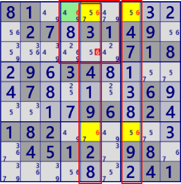
Coverset: c57#4 b2#4 |
rank1 r3c5#4 is not true |
| Franken/Mutant Fish | 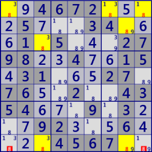 |
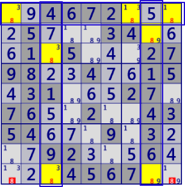
BaseSet: r1#8 c38#8 |
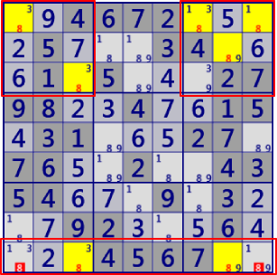
Coverset: r9#8 b13#8 |
rank1 r9c19#8 is not true |
| Finned F/M Fish | 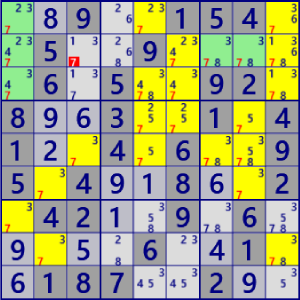 |
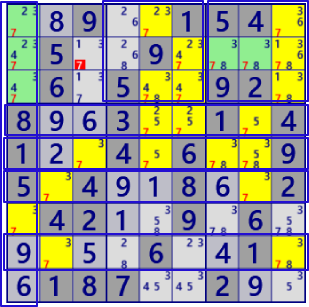
BaseSet: r4568#7 c1#7 b23#7 |
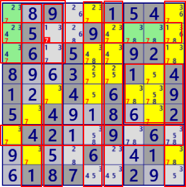
Coverset: r27#7 c23569#7 b16#7 |
rank2 r2c3#7 is not true |
| SkyScraper | 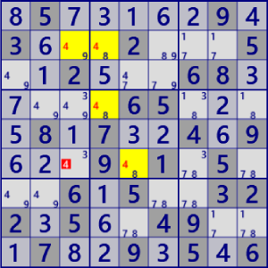 |
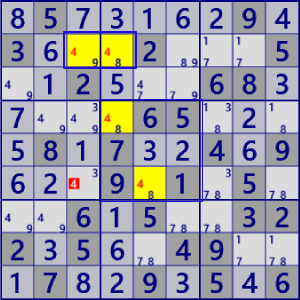
BaseSet: r2#4 b#4 |
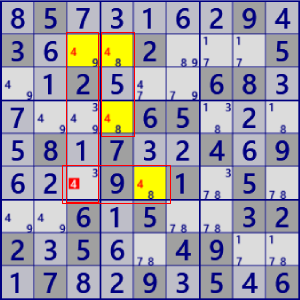
Coverset: C34#4 r6#4 |
rank1 r6c3#4 is not true |
| EmptyRectangle | 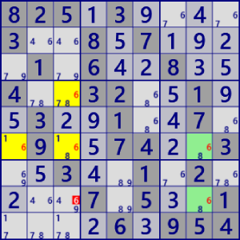 |
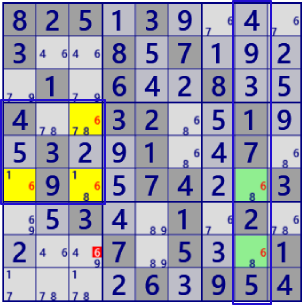
BaseSet: c8#6 b4#6 |
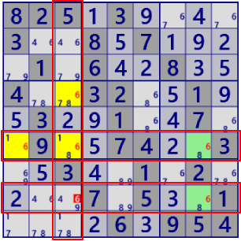
Coverset: r68#6 c3#6 |
rank1 r8c3#6 is not true |
| X-Chain | 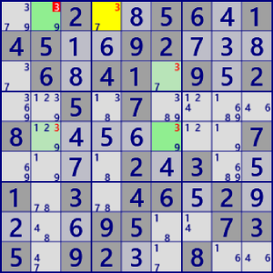 |
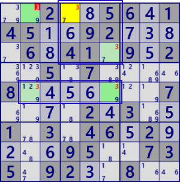
BaseSet: r5#3 b2#3 |
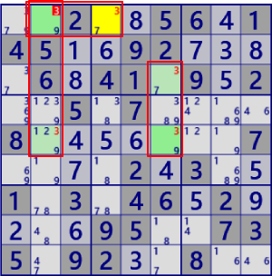
Coverset: r1#3 c25#3 |
rank1 r1c2#2 is not true |
| XY-Chain | 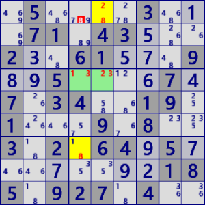 |
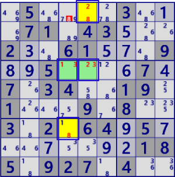
BaseSet: r1c5 r4c45 r7c4 |
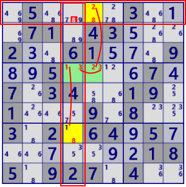
Coverset: r1#8 c2#2 r4#3 c4#1 c4#8 |
rank1 r1c4#8 is not true |
| ColoringTrap | 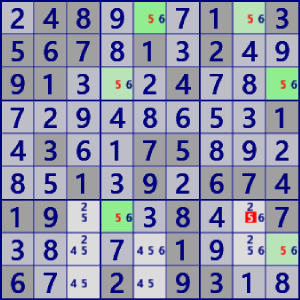 |
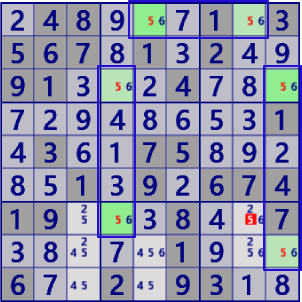
BaseSet :r1#5 C49#5 |
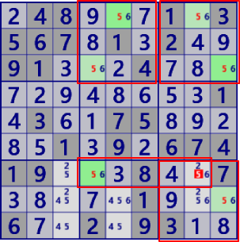
Coverset: b239#5 C7#5 |
rank1 r7c8#5 is not true |
| ColoringWrap |
BaseSet: r7#5 C69#5 b14#5 |
Coverset: r156#5 C23#5 b3#5 |
(左図例はBase/CoverSetによる解が重なっている。） rank1 r1c7#5 is not true |
|
| MultiColoringType1 |
BaseSet: r8#4 c58#4 |
Coverset: r5#4 C8#4 b33#4 |
rank1 r12c8#4 is not true |
|
| MultiColoringType2 |
BaseSet: r6#4 c18#4 (BaseSetに含む セルのみが対象) |
Coverset: r29#4 c3#4 b6#4 Coverset: r9#4 c12#4 b6#4 |
rank1 r2c3#4 is not true rank1 r1c9#4 is not true |
|
| XY-Wing |
BaseSet: r36c2 r6c8 |
Coverset: r3#7 r6#2 c2#3 c8#7 |
rank1 r3c8#7 is not true |
|
| W-Wing |
BaseSet: r3c4 r7c7 r1#1 |
Coverset: r7#4 c4#14 c7#1 |
rank1 r7c4#4 is not true |
|
| RemotePair |
BaseSet: r4c5 r5c4 r5c9 r7c9 |
Coverset: r57#7 c5#7 c9#3 b5#3 |
rank1 r7c5#7 is not true |
|
| XYZ Wing |
BaseSet: r4c78 r9c8 |
Coverset: r4#5 c8#69 b6#9 |
rank1 r6c8#9 is not true |
|
| XYZ Wing(ALS) | 
|
BaseSet: r36c1 r456c2 |
Coverset: c1#69 b4#1267 (表示略） |
rank1 r5c1#6 is not true |
| SueDeCoq |
BaseSet: r1c5 r2c469 |
Coverset: c2#19 b2#78 |
rank0 r2c3#1 is not true |
|
| ALS XZ(SinglyLinked) |
BaseSet: r2c46 r3c24 |
Coverset: r2#67 r3#1 b1#6 b2#5 |
rank1 r1c2#6 is not true |
|
| ALS XZ(DoublyLinked) |
BaseSet: r1c3459 r3c1238 |
Coverset: r1#236 b3#24 b1#156 |
rank0 r2c67#24 is not true |
|
| ALS XY-Wing |
BaseSet: r1c78 r12c3 r4c57 |
Coverset: r14#1 r1#9 c3#45 c7#2 |
rank1 r4c3#5 is not true |
|
| ALS Chain |
BaseSet: r4c5 r4c379 r5c5 r6c7 |
Coverset: r4#247 r5#4 c6#4 b6#45 |
rank1 r5c8#4 is not true |
|
| ALS DeathBlossom |
BaseSet: r2c3 r12368c2 r27c7 |
Coverset: r2#69 r7#7 c2#34567 c7#5 |
rank1 r7c2#7 is not true |
|
| NiceLoop Continuous |
BaseSet: r8#9 c36#7 c6#1 |
Coverset: r4#7 r6c7 r8c37 |
rank0 r4c1#7 is not true |
|
| NiceLoop Discontinuous |
BaseSet: r2#5 c1#2 c3#8 r4c4 |
Coverset:r2c13 r4#2 r7#8 c4#8 |
rank1 r7c4#8 is not true |